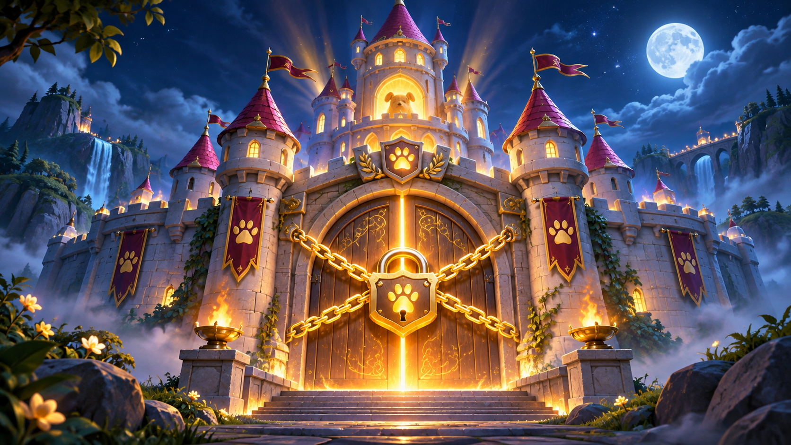

Hinter dem hundertsten Tor liegt das verschlossene DOG-Schloss. Drei Helden, fünf gefährliche Welten und zehn gemeinsame Wächter trennen euch vom Ziel. Jeder kämpft auf seinem persönlichen Weg – die großen Bosse besiegt ihr gemeinsam.
Du kannst die normalen Kämpfe unabhängig von den anderen abschließen. Deine Ausrüstung beeinflusst deine Siegchance.
🛡️ Gemeinsam stärker
Bei Tor 10, 20 und jedem weiteren zehnten Tor kämpft ihr zu dritt. Eure Siege eröffnen die nächste Schmiedestufe.
🏰 Das große Ziel
Erst wenn der letzte Gruppenboss bei Tor 100 serverseitig besiegt ist, darf DOG freigeschaltet werden.
EURE EXPEDITION
🧭 Wo stehen die drei Helden?
🤖 Zwei Testspieler hinzufügen
Du spielst mit deinem echten Profil. Nova und Titan besetzen die zwei freien Heldenplätze, spielen Boss-Minispiele automatisch und erhalten selbst keine Kisten. Dein Fortschritt, deine Rohstoffe und deine Ausrüstung bleiben normal gespeichert.
Nur für dein Spielerprofil freigegeben.
Prüfe deine Anmeldung und den gemeinsamen Fortschritt …
🔒 Dein Held ist für deine gesamte Reise festgelegt. Viel Erfolg auf dem Weg zu Tor 100!
Die Markierungen zeigen die zuletzt vom Server gespeicherte Position, nicht den minutengenauen Online-Status. Die Karte aktualisiert sich beim Spielen und in größeren Abständen, um Firebase-Abfragen zu sparen.
🧭Entwicklungsansicht: Die Torstände und Solo-Kämpfe werden nur mit bestätigtem Spielerprofil vom Server geladen. Bei fehlender Serververbindung bleiben die Markierungen bewusst leer. Die zehn gemeinsamen Bosse sind im Entwicklungsstand bereits integriert; der gemeinsame Praxistest steht noch aus.
HINTER TOR 100 · EUER GEMEINSAMES ZIEL

Das verschlossene DOG-Schloss
Hinter dem letzten Wächter verbirgt sich das neue Brettspiel DOG. Wenn eure Heldengruppe Tor 100 gemeinsam besiegt, öffnet sich das Tor – und das Spiel wird freigeschaltet. Bis dahin bleibt DOG das sichtbare Ziel eurer Expedition.